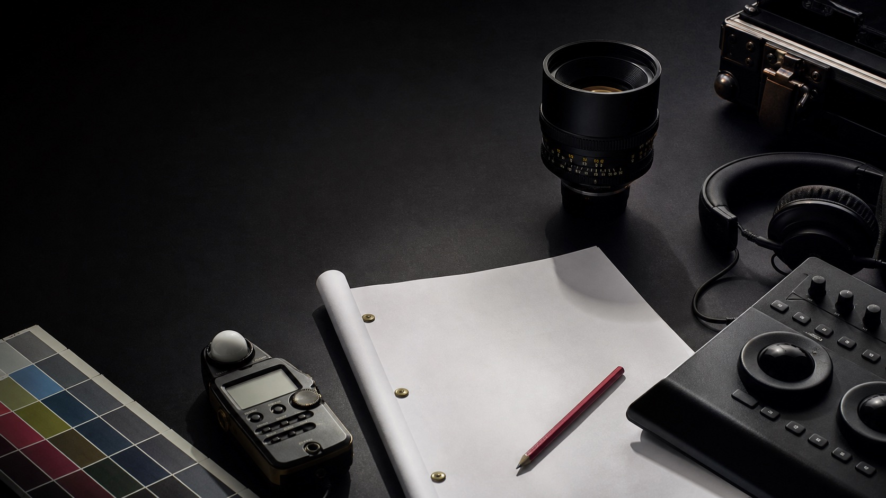

Scripted
Story-led production for narrative work.
- Short films
- Feature films
- Series
- Branded narratives
- Development support
- Production management

From concept to delivery
We shape the right team and process for every format, with clear communication from the first conversation through final delivery.
Each engagement begins with listening. Scope, crew, schedule, and creative direction are shaped around the project rather than forced into a fixed package.
Story-led production for narrative work.
Real people and real stories, handled with care.
Campaign content designed to earn attention.
We start with your goals, audience, constraints, and what success needs to look like.
We define the creative direction, scope, team, schedule, and production plan.
We run a respectful, prepared set where every contributor can do their best work.
We finish with care, communicate clearly, and deliver the right assets for the release.